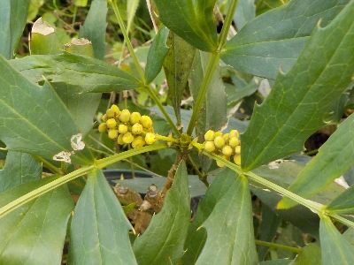
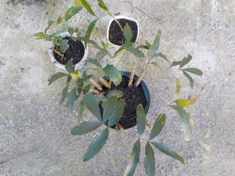
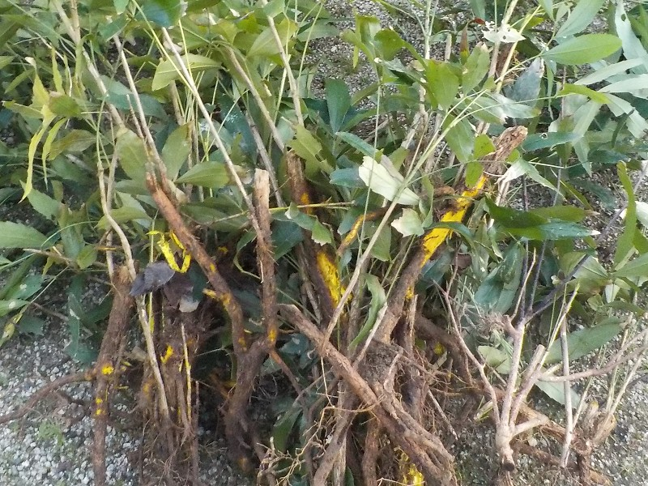

もうちょっとでホソバヒイラギナンテンが咲きそうです。
2024/10/20

花が咲いたらスズメバチが寄って来るんだろうなと思い、危なくならない場所に移動しました。
うーん。危なくない場所は近づかないから花をあまり見ないな。まあ遠くから見ればいいかな。
2024/10/20

花が咲いたらスズメバチが寄って来るんだろうなと思い、危なくならない場所に移動しました。
うーん。危なくない場所は近づかないから花をあまり見ないな。まあ遠くから見ればいいかな。
2024/02/18

普通に販売しているホソバヒイラギナンテンを捨てるのはもったいないです。
引き抜いたので根っこがボロボロですが、再生するんじゃないかと鉢に植えました。
鉢だったら動かせるので、スズメバチが来たら遠くに置くとか、殺虫剤をまんべんなくかければ対策出来るんじゃないかと思っています。
2024/02/17

花が咲くとスズメバチが寄ってきて危険なので引っこ抜きました。
こぼれ種や抜き損なった根っこが多分残っていると思います。半年くらい経ったらまた生えていないか確認しようと思います。
花にスズメバチが寄ってくるので危険です。